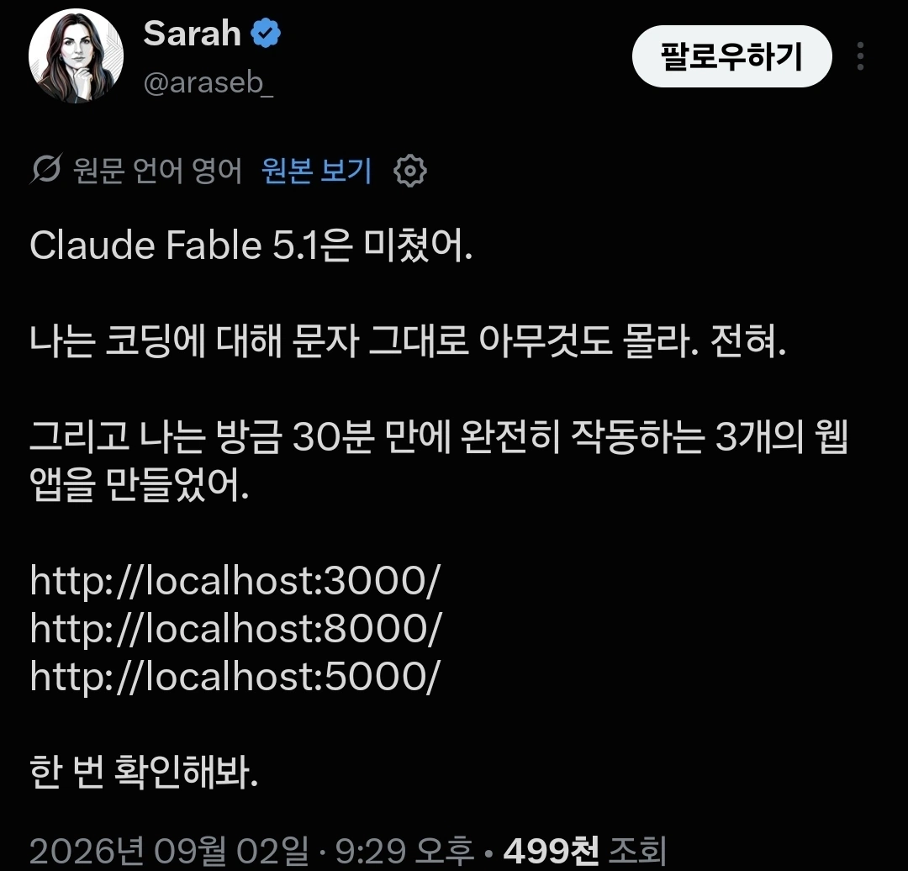

쩐당

쩐당
코딩에 대해 아무것도 모르는 거 맞네
템플런임
진짜들은 댓글로 꺼드럭댄다고?!?!
저 링크 들어가니까 내가 클로드로 만든 페이지랑 똑같게 나오는데? ㅋㅋㅋㅋ 완전 신기하다 ai로 만든 결과물은 다 똑같나바
신기신기
싸가지없는 ai 색기들
토큰 아낄려고 복붙했네
코딩 하나도 모르는데 이 콘 졸귀고 웃김 ㅋㅋㅋㅋ
확실히 아무것도 모르네
ㅋㅋㅋ 어쨌든 나는 보이죠?

어차피 저친구만 쓸건데, 잘 됐네
오메데토
아니 드립이 아니라?
진짜 ‘홈’페이지...
ai가 도메인 따로 파야 되는 건 안 알려주냐
알려줌. 단, 사람이 먼저 물어보면
내 노트북에선 잘 보이는제, 다른 사람은 안 보인다고 하네
라고 물어보면 다 알려줌
이 문제는 ***상대방이 현재 실행되고 있는 환경과의 연결을 수립할 수 없어서 발생***하는 문제입니다. 상대방의 PC에 백도어를 설치하겠습니다.
주소가 잘못되었네 192.168.0.1:3000 으로 접속하면 나올듯
엥 나는 127.0.0.1:3000으로 접속하니까 나오는데
우와 역시 ai 대단해! 접속이 안될걸 대비해서 여러 주소를 만들어놨잖아! ㅎ
와정말요
'제 자리에서는 잘 열리는데요...혹시 컴퓨터 초보신지?'
적어도 피싱 사이트는 아니네 ㅋㅋㅋㅋ
127.0.0.1 을 갔어야지
npm run dev 가 뭔데
폰헙에 올려라
sudo poweroff
work on my machine
ㄹㅇ 홈페이지
??? : 잘 안 된다구요? 클로드한테 물어보세요.
와 개발자들 다 망했네 ㄷㄷ
there is no place like 127.0.0.1
테일스케일깔아라


설명 : localhost 는 자신을 가리킴
wrangler ㄱㄱ
8080 해야지 안전해~
코딩이 문제가 아니라 인터넷을 모르네
뭐 가끔 개발자들도 상대경로 박아두고는 ????? 이럴때 있음
21c 각주구검 ㅋ
컴끼얏호
대단하긴함
나도 코딩의 ㅋ도 모르는데 바이브로 주간업무 일간업무 kpi 하이라키로 연동되는 일정표 만들엇고 업무간 상호 코멘트도, 코맨트 달면 상대방에게 사내메일 알람가게해서 무료 서버 구축해서 팀내 뿌림
테스트중인데 그간 엑셀론 표현하지 못했던 상상했던 기능 다 넣고 ai연동시켜서 일정 브리핑에 회의록 정리에 자동 업무추가 되도록함
진짜 대단해 ai는
wow